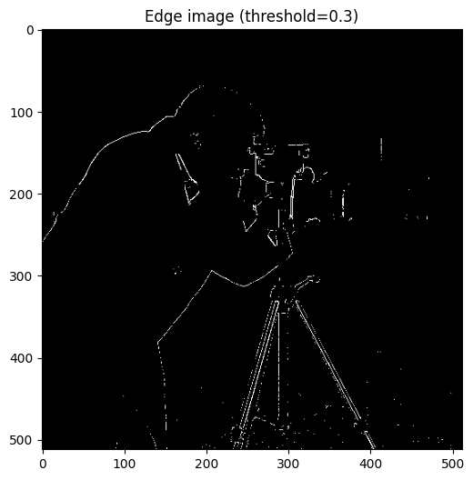
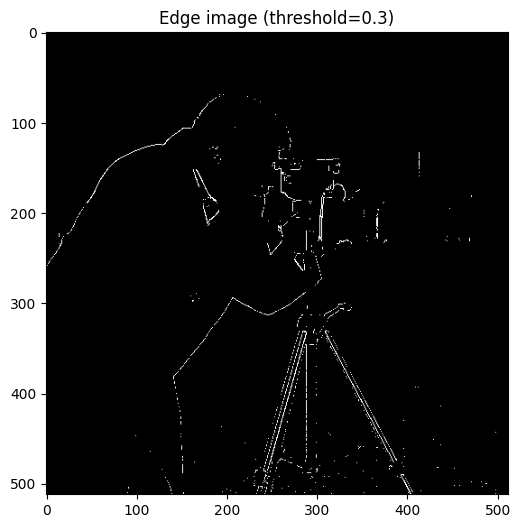

Part 1: Fun with Filters
1.1 Convolutions from Scratch
Here I implement convolution with four nested loops, then optimize to two loops,
and finally compare with the built-in scipy.signal.convolve2d.
import numpy as np
from scipy import signal
import matplotlib.pyplot as plt
from skimage import data
# Four-loop convolution
def conv4(image, kernel):
Hi, Wi = image.shape
Hk, Wk = kernel.shape
pad_h, pad_w = Hk//2, Wk//2
# Zero-padding: pad with 0 around the border
padded = np.pad(image.astype(np.float64), ((pad_h, pad_h), (pad_w, pad_w)), 'constant')
out = np.zeros((Hi, Wi), dtype=np.float64)
kernel_flipped = np.flipud(np.fliplr(kernel))
for i in range(Hi):
for j in range(Wi):
val = 0.0
for m in range(Hk):
for n in range(Wk):
val += padded[i+m, j+n] * kernel_flipped[m, n]
out[i,j] = val
return out
# Two-loop convolution
def conv2(image, kernel):
Hi, Wi = image.shape
Hk, Wk = kernel.shape
pad_h, pad_w = Hk//2, Wk//2
padded = np.pad(image.astype(np.float64), ((pad_h,pad_h),(pad_w,pad_w)), 'constant')
out = np.zeros((Hi, Wi), dtype=np.float64)
kernel_flipped = np.flipud(np.fliplr(kernel))
for i in range(Hi):
for j in range(Wi):
out[i, j] = (padded[i:i+Hk, j:j+Wk] * kernel_flipped).sum()
return out
# Example image
img = data.coins()
kernel = np.array([[1,0,-1],[1,0,-1],[1,0,-1]])
out4 = conv4(img, kernel)
out2 = conv2(img, kernel)
out_builtin = signal.convolve2d(img, kernel, mode='same')
plt.figure(figsize=(12,4))
plt.subplot(1,3,1)
plt.imshow(out4, cmap='gray')
plt.title("My Conv (4 loops)")
plt.subplot(1,3,2)
plt.imshow(out2, cmap='gray')
plt.title("My Conv (2 loops)")
plt.subplot(1,3,3)
plt.imshow(out_builtin, cmap='gray')
plt.title("scipy.signal.convolve2d")
plt.show()

Padding Strategy: To preserve the output size, we use zero-padding, i.e., padding the input image with zeros around the border. When the convolution kernel extends beyond the edge of the image, the out-of-bound pixels are treated as 0. This ensures that the output has the same dimensions as the original input.
import time
t0 = time.perf_counter(); out4 = conv4(img, kernel); t4 = time.perf_counter()-t0
t0 = time.perf_counter(); out2 = conv2(img, kernel); t2 = time.perf_counter()-t0
t0 = time.perf_counter(); outb = signal.convolve2d(img, kernel, mode='same'); tb = time.perf_counter()-t0
print(f"conv4: {t4:.3f}s, conv2: {t2:.3f}s, builtin: {tb:.3f}s")
| Method | Runtime (s) |
|---|---|
| conv4 (4 loops) | 0.373 |
| conv2 (2 loops) | 0.303 |
| builtin (SciPy) | 0.003 |
Analysis: The built-in SciPy function is by far the fastest. The 2-loop version is faster than the 4-loop one, and reducing the number of loops and leveraging vectorized operations tends to improve speed.
Then, this is a picture of my cat Coconut (read as grayscale), and convolved with the box filter. I also apply the finite difference operators Dx and Dy.
import imageio.v2 as imageio
from skimage import color
import numpy as np
import matplotlib.pyplot as plt
myimg = imageio.imread('myself.jpg')
mygray = color.rgb2gray(myimg)
# 9x9 Box filter
box_filter = np.ones((9,9), dtype=np.float32)/81.0
blurred = conv2(mygray, box_filter)
plt.imshow(blurred, cmap='gray')
plt.title("Box Filter (9x9)")
plt.show()
# Finite difference operators
Dx = np.array([[1,-1]], dtype=np.float32)
Dy = np.array([[1],[ -1]], dtype=np.float32)
Ix = conv2(mygray, Dx)
Iy = conv2(mygray, Dy)
plt.figure(figsize=(10,4))
plt.subplot(1,2,1)
plt.imshow(Ix, cmap='gray')
plt.title("Dx (Horizontal Gradient)")
plt.subplot(1,2,2)
plt.imshow(Iy, cmap='gray')
plt.title("Dy (Vertical Gradient)")
plt.show()


1.2 Finite Difference Operator (Dx, Dy)
Here I apply finite difference operators Dx and Dy on cameraman image to compute partial derivatives, then combine them to obtain the gradient magnitude. Finally, binarize the gradient magnitude with different thresholds to visualize edges.
Below are the gradient magnitude images binarized with several thresholds. A smaller threshold preserves more edges but also more noise; a larger threshold removes noise but may lose fine edges.
 

According to above, I chose threshold=0.2 as a balance: it removes most small noise while keeping the main structures (such as the outline of the cameraman and tripod).
1.3 Derivative of Gaussian (DoG) Filter
The previous results are quite noisy, with many spurious high-frequency responses appearing in flat regions. Although edges can be detected, they appear rough and fragmented.
To reduce the noise in the finite difference gradient, first smooth the image with a Gaussian filter G.
Construct a 2D Gaussian filter by creating a 1D Gaussian using cv2.getGaussianKernel() and taking its outer product with its transpose.
Then compute the derivatives of the smoothed image using the finite difference operators D_x and D_y, obtaining Ix and Iy, and the gradient magnitude. Compared with the unsmoothed gradients, the smoothed gradients are less noisy and highlight the main edges more clearly.
Alternatively, construct DoG filters by convolving the Gaussian kernel G with D_x and D_y to produce DoG_x and DoG_y. Applying these DoG filters directly to the original image produces nearly identical results to smoothing first and then computing derivatives, as verified by the small numerical differences.
Gaussian smoothing significantly reduces noise compared with the simple finite difference method, and the DoG filters combine smoothing and differentiation in a single convolution. This approach is more efficient and confirms that Gaussian smoothing and differentiation are commutative.
Part 2: Fun with Frequencies
2.1 Image Sharpening (Unsharp Masking)
sharpened = original + α * (original - blurred)
A Gaussian filter produces the blurred version. Subtracting it from the original extracts high frequencies, which are then scaled by α and added back to enhance edges and details. Below we show the comparison for the Taj Mahal image:

Another test on a picture of my cat Coconut:
Observations: The sharpened images show clearer edges and textures. Increasing α enhances sharpness but too large a value may introduce visible artifacts or unnatural contrast.
2.2 Hybrid Images
The idea of hybrid images is to combine the low-frequency (blurred) part of one image with the high-frequency (edge/detail) part of another. At close viewing distance, the high frequencies dominate perception, so we see image A. From far away, the high frequencies fade, and the low frequencies dominate, so we see image B.
Example 1: Derek + Nutmeg
For this hybrid, I show the original and aligned inputs, their Fourier transforms, the filtered results, the chosen cutoff frequency (σ = 4), and the final hybrid. The cutoff was chosen to preserve Derek’s smooth face while emphasizing Nutmeg’s high-frequency details.
Example 2 & 3: Motorcycle + Bicycle & Strawberry + fish
Process: keep high frequencies of motorcycle/strawberry, low frequencies of bicycle/fish, and combine them into a hybrid.

Example 3: Other Hybrids
I also created multiple hybrid examples (e.g., change of expression, my cat growing older (eating a lot)).
Part 2.3/2.4: Gaussian & Laplacian Stacks + Multiresolution Blending
Gaussian & Laplacian Stacks (no downsampling)
A stack is similar to a pyramid but every level has the same spatial size as the original image; only the amount of Gaussian smoothing increases at each level. To build a Gaussian stack, repeatedly blur the image (increasing the effective sigma each level) and store each blurred image. The Laplacian stack is formed by taking the difference between successive Gaussian levels (L[i] = G[i] - G[i+1]) with the last level equal to G[N].
Core pseudo-code
# Gaussian stack
G[0] = img
for i in 1..N:
G[i] = gaussian_filter(G[i-1], sigma_i)
# Laplacian stack
L[i] = G[i] - G[i+1]
L[N] = G[N]
# Blending with mask
for each level:
blended = mask_gauss[level] * L1[level] + (1-mask_gauss[level]) * L2[level]
Reconstruct by summing blended levels
Multiresolution Blending (the Oraple)
In this approach, each level of the stack maintains the original image size, with increasing Gaussian smoothing at higher levels. The Laplacian stack is obtained by taking differences between successive Gaussian levels, with the final level equal to the most blurred Gaussian image. For blending, the Laplacian bands from two images are combined at each level using a Gaussian-smoothed mask, and the final blended image is reconstructed by summing all levels from coarse to fine.

Below are example results: the input pair, the blended result, and a visualization of Laplacian bands for the chosen levels.